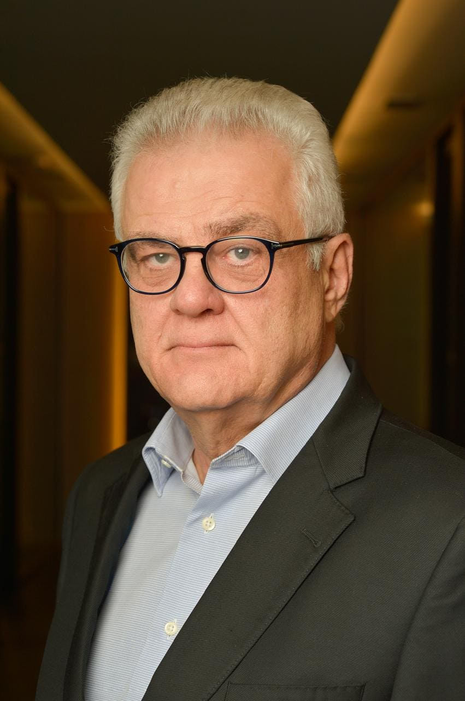

Humberto Casagrande
- Origine italiana
- Veneto
- Attività
- Ingegnere, dirigente d'azienda e dirigente del terzo settore
Apri la biografiaChiudi la biografia
Humberto Casagrande, 68 anni, è nato a Dois Córregos (SP) e ha radici familiari in Veneto. È ingegnere di produzione (UFSCar) e ha un master in Amministrazione Aziendale (PUC-SP). Ha costruito una carriera di 35 anni nel mercato finanziario, ricoprendo incarichi dirigenziali in Sudameris, Citibank e Banespa, oltre a essere stato consigliere della Bovespa e presidente dell'ABAMEC. Da circa dieci anni presiede il CIEE (Centro de Integração Empresa-Escola), istituzione dedicata alla formazione e all'inserimento professionale dei giovani in tutto il Brasile. Nel 2016 ha vissuto un anno sabbatico in Italia, con base a Siena, durante il quale ha percorso tutte le 20 regioni italiane. Negli ultimi anni partecipa anche a iniziative accademiche, culturali e di assistenza sociale in collaborazione con il Consolato Generale d'Italia a San Paolo.